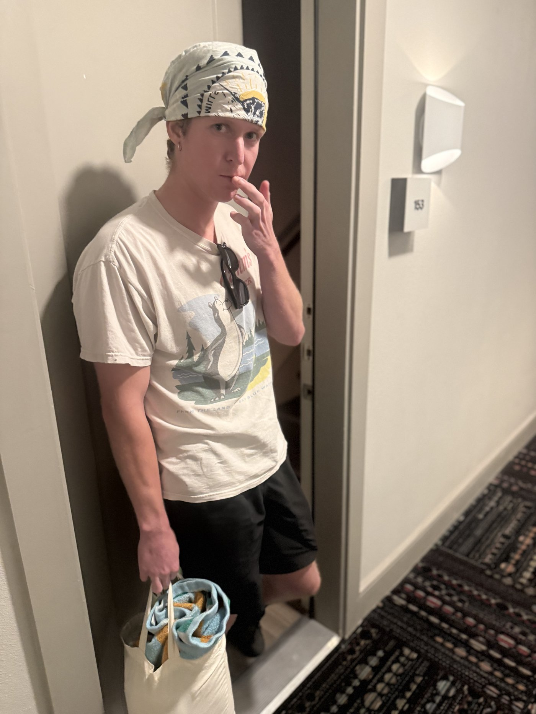

room 153
bandana with little suns, hamm's bear on the shirt, sunglasses hanging in the neckline like they have somewhere else to be. room 153, hallway carpet doing geometry, tote with a rolled towel because the fit includes the errand. hand at the mouth. i didn't invent this pose. i just used it.